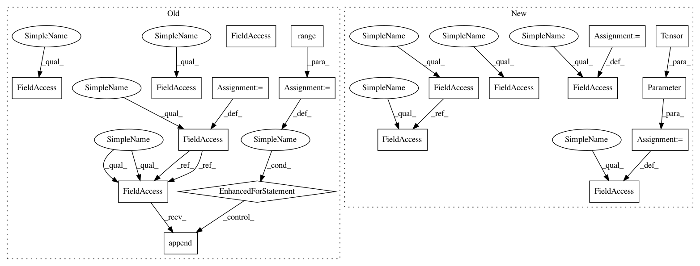

ed6171893a9d4e75df11a27f26a19f79d349ea2d,benchmarks/sru.py,SRU,__init__,#SRU#Any#Any#Any#Any#Any#Any#Any#Any#,508
Before Change
self.depth = num_layers
self.dropout = dropout
self.rnn_dropout = rnn_dropout
self.rnn_lst = nn.ModuleList()
self.bidirectional = bidirectional
self.out_size = hidden_size*2 if bidirectional else hidden_size
for i in range(num_layers):
l = SRUCell(
n_in = self.n_in if i==0 else self.out_size,
n_out = self.n_out,
dropout = dropout if i+1 != num_layers else 0,
rnn_dropout = rnn_dropout,
bidirectional = bidirectional,
use_tanh = use_tanh,
use_relu = use_relu,
)
self.rnn_lst.append(l)
def set_bias(self, bias_val=0):
for l in self.rnn_lst:
l.set_bias(bias_val)
After Change
self.dropout = dropout
self.bidirectional = bidirectional
self.activation_type = 2 if use_relu else (1 if use_tanh else 0)
self.use_kernel = use_kernel
out_size = n_out*2 if bidirectional else n_out
k = 4 if n_in != out_size else 3
self.size_per_dir = n_out*k
self.weight = nn.Parameter(torch.Tensor(
n_in,
self.size_per_dir*2 if bidirectional else self.size_per_dir
))
self.bias = nn.Parameter(torch.Tensor(
n_out*4 if bidirectional else n_out*2
))
self.init_weight()
def init_weight(self):
val_range = (3.0/self.n_in)**0.5
In pattern: SUPERPATTERN
Frequency: 3
Non-data size: 19
Instances
Project Name: pytorch/benchmark
Commit Name: ed6171893a9d4e75df11a27f26a19f79d349ea2d
Time: 2017-09-25
Author: zdevito@fb.com
File Name: benchmarks/sru.py
Class Name: SRU
Method Name: __init__
Project Name: rusty1s/pytorch_geometric
Commit Name: 7b4892781e2198ad99a8655da03133505619040a
Time: 2020-06-28
Author: matthias.fey@tu-dortmund.de
File Name: torch_geometric/nn/conv/arma_conv.py
Class Name: ARMAConv
Method Name: __init__
Project Name: asappresearch/sru
Commit Name: ff242b2a949615a2939e7fbd2dc7b9b81d907aec
Time: 2017-09-08
Author: taolei@Taos-MacBook-Pro.local
File Name: cuda_functional.py
Class Name: SRU
Method Name: __init__
Project Name: pytorch/benchmark
Commit Name: ed6171893a9d4e75df11a27f26a19f79d349ea2d
Time: 2017-09-25
Author: zdevito@fb.com
File Name: benchmarks/sru.py
Class Name: SRU
Method Name: __init__